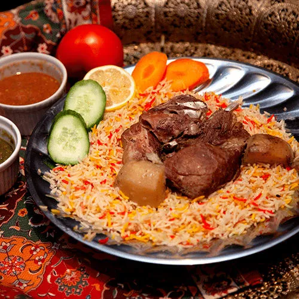
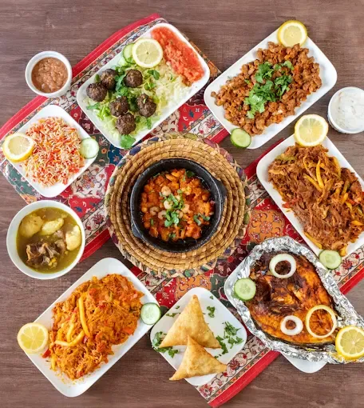
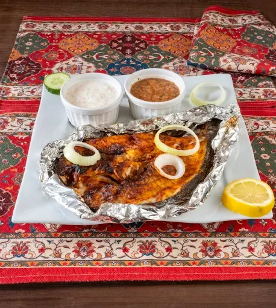
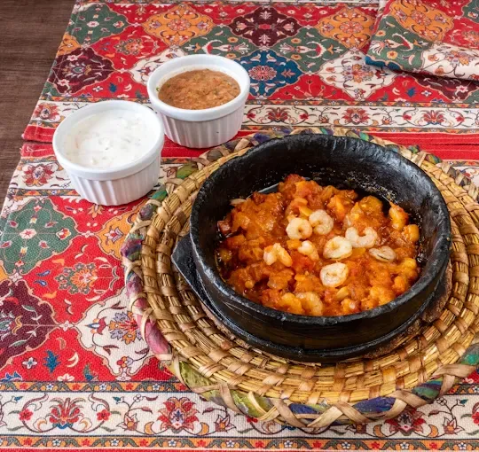
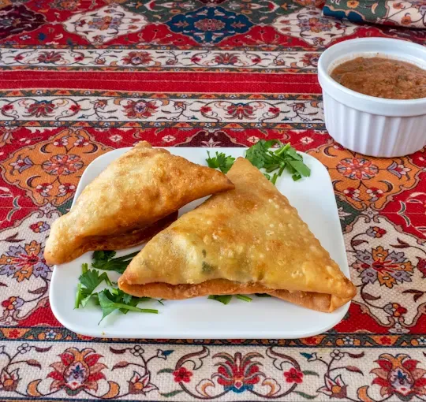

Madfoon vlees 22,00
Lamsvlees gegaard op houtskool in folie.
مطعم باب اليمن
Jemenitische keuken aan de Amsterdamsestraatweg in Utrecht. Madfoon van de houtskool, vis uit de tanoor en Mulawah brood.
Dagelijks 13:00 - 22:00 · woensdag restaurant gesloten

Dé plek in Utrecht waar authentieke smaken uit Jemen samenkomen met warme gastvrijheid. Gelegen aan de levendige Amsterdamsestraatweg brengen wij een unieke culinaire beleving naar jouw bord. Onze keuken staat bekend om heerlijke traditionele gerechten zoals Madfoon, Sambosa en diverse smaakvolle kipgerechten.
Of je nu komt proeven in ons restaurant of geniet vanuit huis: bij Bab Al Yemen proef je de echte smaken van het Midden-Oosten.

Lamsvlees gegaard op houtskool in folie.

Zeebrasem gegrild in de tanoor, met sahaweq met feta en Mulawah brood.

Gestoofde garnalen met tomatensaus en kruiden, met Mulawah brood.

Met vlees, kip of aardappel. Per stuk.
Geen zin om te koken, maar wel trek in iets bijzonders? Bestel eenvoudig en snel jouw favoriete gerechten via de website en geniet van de Jemenitische keuken gewoon bij jou thuis.
Bezorgen: dagelijks 13:00 - 22:00, behalve vrijdag.
Online bestellenLiever zelf je maaltijd ophalen? Bestel online en kies voor afhalen. Wij zorgen dat alles klaarstaat op het afgesproken tijdstip. Kom langs aan de Amsterdamsestraatweg en neem de smaken van Bab Al Yemen mee naar huis.
Afhalen: elke dag 13:00 - 22:00.
Bestel om af te halenKom aan tafel in het restaurant. Online reserveren kan voor 1 tot 20 personen, van een dag tot 60 dagen vooruit. Tijden tussen 13:00 en 22:00.
Woensdag is het restaurant gesloten.
Reserveer een tafel| Restaurant | Bezorgen | |
|---|---|---|
| Maandag | 13:00 - 22:00 | 13:00 - 22:00 |
| Dinsdag | 13:00 - 22:00 | 13:00 - 22:00 |
| Woensdag | gesloten | 13:00 - 22:00 |
| Donderdag | 13:00 - 22:00 | 13:00 - 22:00 |
| Vrijdag | 13:00 - 22:00 | geen bezorging |
| Zaterdag | 13:00 - 22:00 | 13:00 - 22:00 |
| Zondag | 13:00 - 22:00 | 13:00 - 22:00 |
Afhalen kan elke dag van 13:00 tot 22:00.